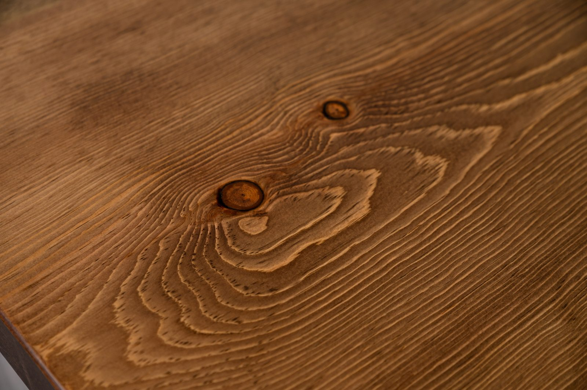
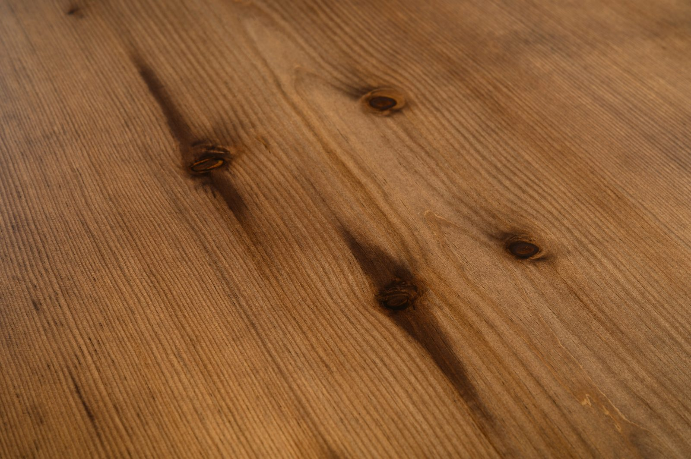

Материал
Алтайский кедр — цельный массив
Мы работаем с цельными слэбами: доска распиливается вдоль, сохраняя естественную форму ствола — живой край, текстуру и характер дерева.
- Порода. Кедр горного Алтая: сушёный и термообработанный.
- Покрытие. Полимеры premium-класса Polistuc (Италия) и Votteler (Германия) — тактильная, «живая» поверхность; древесина под ними влагостойкая и прочная.
- Конструкция. Живой край сохраняется; часть изделий — с эпоксидной заливкой.




 Живой край и текстура
Живой край и текстура Сучки и природный рисунок
Сучки и природный рисунок Стол-река
Стол-река